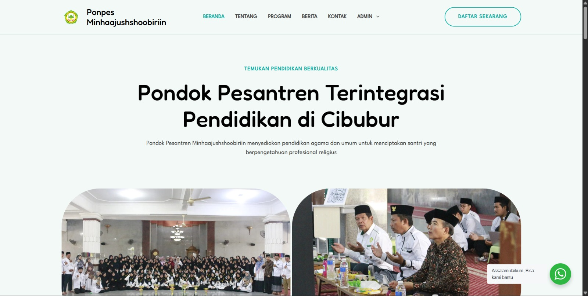
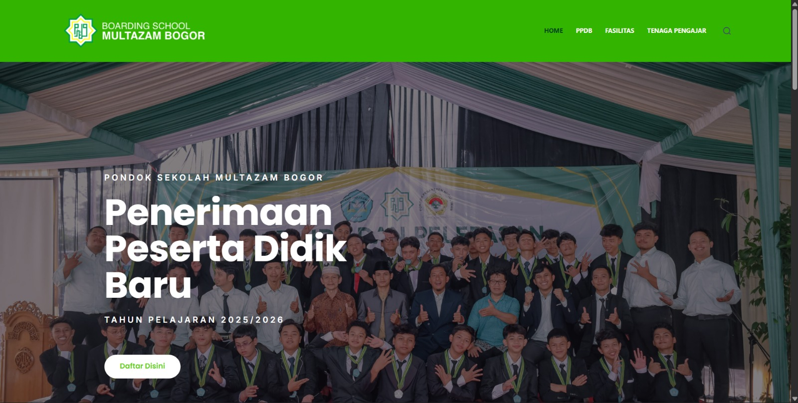
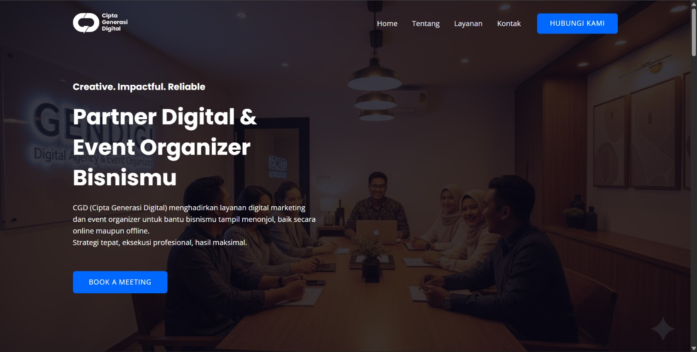
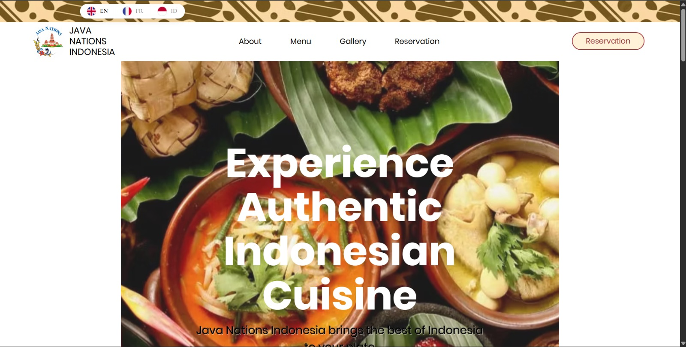
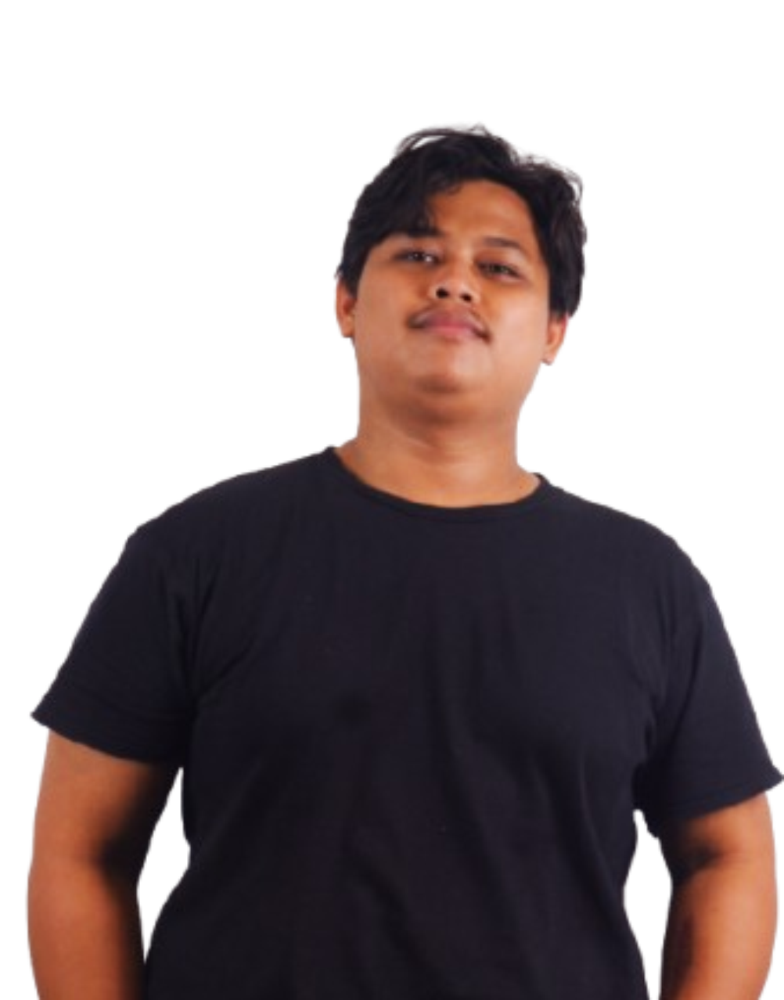
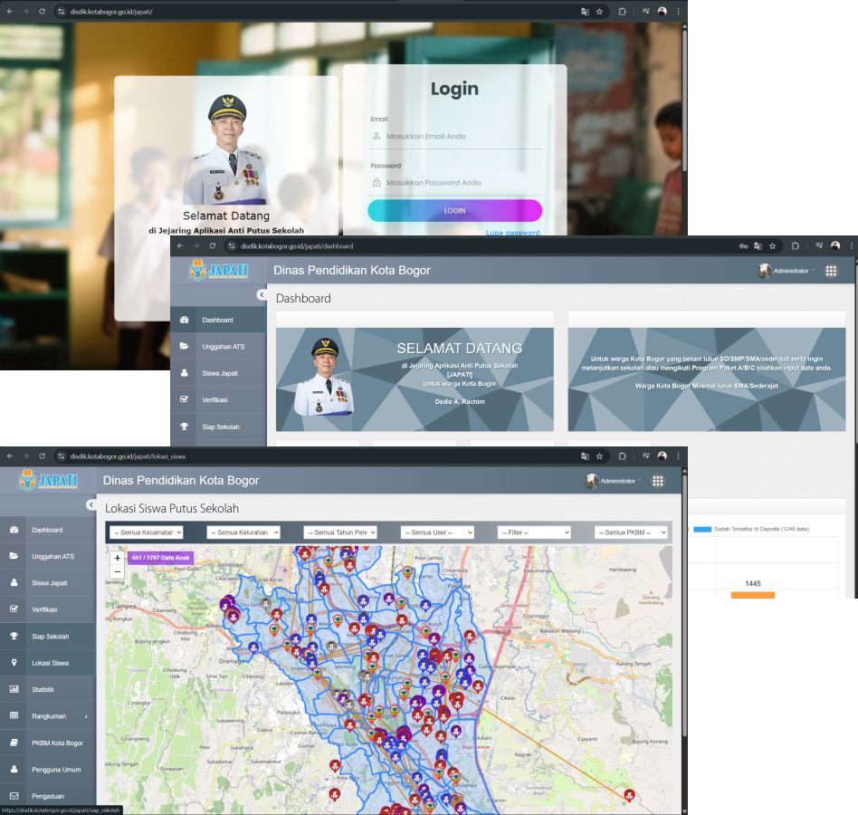
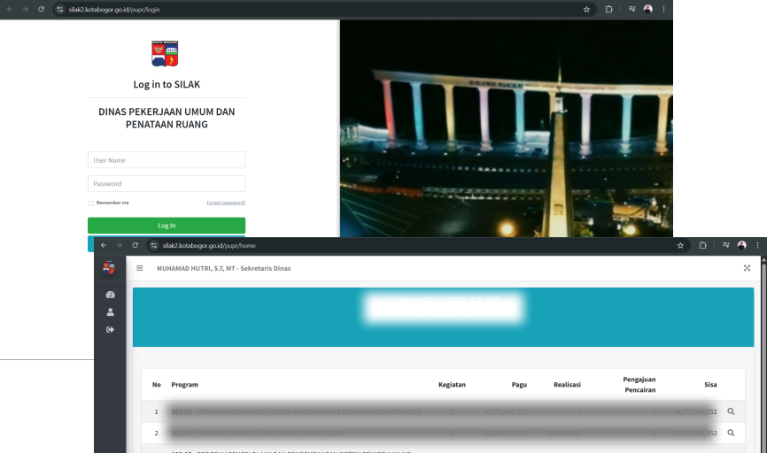
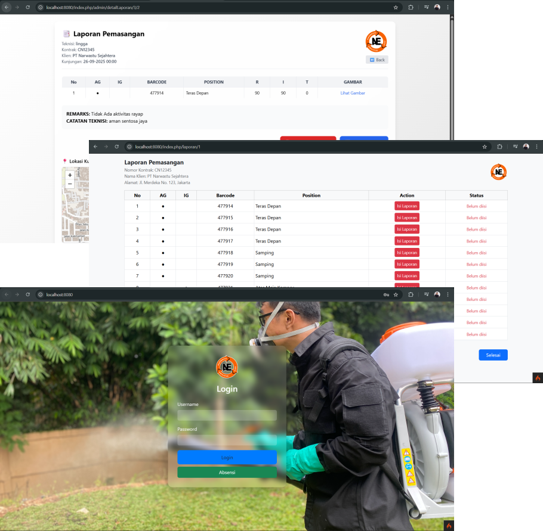
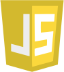

Web Design Highlights
Some of my favorite profile websites, designed to impress.







I started my journey in programming and events back in 2019, when I was entrusted to build a website for Minhaajushsoobiriin Islamic School. That project was more than just creating a WordPress site—it was also my first step into the world of event organizing and multimedia, where I learned to handle visuals and even work as a VJ.
At the same time, I pursued a degree in Information Systems, sharpening both my technical and creative skills. My early challenges—developing a simple attendance system in PHP while also managing school events—became the foundation of my passion for combining technology and creativity.
Over time, I moved on to more complex projects. One of the most challenging was JAPATI (Jaringan Aplikasi Anti Putus Sekolah), a large-scale application for the Bogor City Education Department designed to track and re-enroll students who had dropped out of school. The system included city-wide student tracking with geolocation features, and its success helped many students return to education.
On the event side, one of my biggest milestones was managing multimedia for the Tursina Tours Hajj Rehearsal event, attended by thousands of participants. Standing in front of such a massive audience while ensuring flawless visuals taught me leadership, problem-solving under pressure, and teamwork at a whole new level.
Through these experiences, I grew not only in technical expertise, but also in leadership, problem-solving, and team collaboration.
Today, I position myself as a Programmer and Multimedia Specialist. I believe that technology is not only about functionality, but also about aesthetics and user experience. Every system or website I build is infused with creativity, ensuring that it doesn’t just work—it looks and feels great to use.
What makes me unique is my ability to merge technical precision with artistic vision. With skills in both programming and visual design, I bring a multidisciplinary approach to every project I take on.
Looking ahead, my mission is to create more meaningful systems that impact people’s lives, just like JAPATI did for students in Bogor. By blending my technical expertise and creative passion, I aim to deliver technology that not only solves problems but also inspires.
I thrive at the intersection of technology and creativity, and I’m excited to adapt my proven experience to new challenges and global opportunities.
at Unit SMK Pondok Sekolah Multazam Bogor
(2022-2025)
Lihat Detailat Narwastu Asia Ekatama
(2023-2025)
Remote Projects (2019 - now)
Highlighted Projects & Results (Portfolio Pieces)
Japati is a web-based application launched by the Bogor City Education Office in 2019 to prevent school dropouts by identifying and reintegrating school-aged children back into education. By November 2019, the system had successfully registered more than 100 students, placed in nearby schools and PKBM, with all costs funded by the government. I contributed as a programmer expert, responsible for developing and implementing this impactful system.

The Financial Reporting Information System (SILAK) for the Bogor City Public Works and Spatial Planning Office (PUPR) is a web-based application designed to streamline financial reporting, monitoring, and accountability processes. The system provides accurate, real-time financial data management to support decision-making and improve transparency within the department. I was involved as a programmer expert, responsible for developing and implementing the system to ensure reliability, usability, and compliance with government standards.

PT Narwastu Asia Ekatama (NAE) is a company specializing in pest control services, particularly termites. In its daily operations, technicians are required to carry out fieldwork and provide detailed reports to both the admin team and management. To streamline this process and improve efficiency, I developed a comprehensive web-based E-Report and Attendance System that enables real-time tracking of technician activities, automated attendance monitoring, and structured reporting. This system not only simplified internal workflows but also enhanced accuracy and transparency in operational management.

Some of my favorite profile websites, designed to impress.






BNSP Certified
Building scalable & automated marketing systems and processes
Google Ads, Meta Ads, LinkedIn Campaign Manager & TikTok Ads
Technical optimization, content strategy, link building
Build and manage WordPress websites from scratch
Decision making based on data using Google Analytics & attribution modeling
Hired, managed & nurtured teams up to 12 people (from intern to full-timer)
Pondok Pesantren Wali Barokah Kediri
2020 - 2024Universitas Sainte Muhammadiyah
2020 - 2024Badan Sertifikasi Profesi Nasional
2024GreatEdu
2023